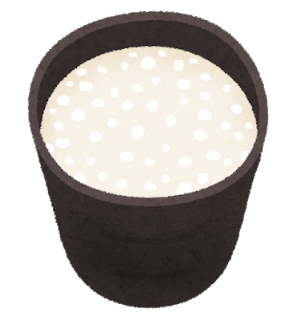

栄養を循環させよう
痩せようと思って食事を極端に減らしたりしていませんか？
しかし、食事量が減ると便秘の原因になってしまいます。
一番いいのは、「適正な量をしっかり食べること」。
そして、「体の中で栄養を循環させる」という意識を持つことです。
食品の栄養には大きく分けて
- 糖・たんぱく・脂
- ビタミン・ミネラル
- 食物繊維
といったものがあります。
このうち、ビタミンとミネラルは体内で合成ができないので、食べて摂取するしかありません。
そして、エネルギーや骨・筋肉の元となる糖・たんぱく・脂を代謝するためにはビタミンB群が必要なのです。
このように、栄養素は体内で循環するのです。この循環を意識することが大切なのですね。
ここでおすすめなのが、甘酒！
米麹から作られた甘酒を飲むと、ビタミンB1・B2・B6が一気に摂れます。
代謝に必要なビタミンB群を摂取することで代謝が上がり、体温が上がり、冷え性も改善され、といいことづくめ！
まさに栄養の循環ですね♪
